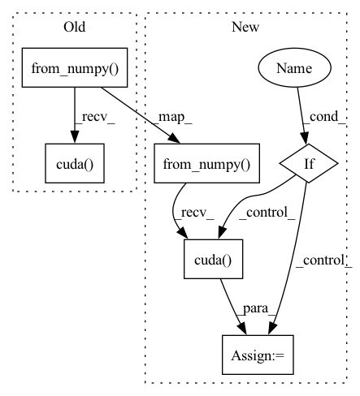

Pattern ID :28527
Before Change
Returns:
[np.ndarray]: The wavelet packets [B, N, H, W, C].
image_batch_tensor = torch.from_numpy(image_batch.astype(np.float32)).cuda()
// transform to from H, W, C to C, H, W
channels = []
for channel in range(image_batch_tensor.shape[-1]):
with torch.no_grad():After Change
Returns:
[np.ndarray]: The wavelet packets [B, N, H, W, C].
image_batch_tensor = torch.from_numpy( image_batch.astype(np.float32))
if cuda :
image_batch_tensor = image_batch_tensor.cuda()
// transform to from H, W, C to C, H, W
channels = []
for channel in range(image_batch_tensor.shape[-1]):
with torch.no_grad():In pattern: SUPERPATTERN
Frequency: 4
Non-data size: 6
Instances Fragment ID: 84391348
Project Name: gan-police/frequency-forensics
Commit Name: c7e12968b14e0f609ab7e5d6df7d4090c85819f3
Time: 2022-03-25
Author: v0lta@users.noreply.github.com
File Name: src/freqdect/wavelet_math.py
M Class Name: AnonimousClass
N Class Name: AnonimousClass
M Method Name: batch_packet_preprocessing(7)
N Method Name: batch_packet_preprocessing(6)
M Parent Class:
N Parent Class:
M File Name: src/freqdect/wavelet_math.py
N File Name: src/freqdect/wavelet_math.py
M Start Line: 146
M End Line: 146
N Start Line: 126
N End Line: 152
Before Change
score = score[order]
keep = nms(
torch.from_numpy(roi).cuda() ,
torch.from_numpy(score).cuda(),
self.nms_thresh
)
After Change
n_pre_nms = self.n_test_pre_nms
n_post_nms = self.n_test_post_nms
anchor = torch.from_numpy( anchor)
if loc.is_cuda :
anchor = anchor.cuda()
//-----------------------------------//
// 将RPN网络预测结果转化成建议框
//-----------------------------------//
Fragment ID: 84391346
Project Name: bubbliiiing/faster-rcnn-pytorch
Commit Name: d456f02a402fd8cf8db1d991aa612439b3c0ffb2
Time: 2021-01-30
Author: 47347516+bubbliiiing@users.noreply.github.com
File Name: nets/rpn.py
M Class Name: ProposalCreator
N Class Name: ProposalCreator
M Method Name: __call__(6)
N Method Name: __call__(6)
M Parent Class:
N Parent Class:
M File Name: nets/rpn.py
N File Name: nets/rpn.py
M Start Line: 43
M End Line: 69
N Start Line: 36
N End Line: 72
Before Change
photo = np.array(crop_img,dtype = np.float64)
// 图片预处理，归一化
photo = Variable(torch.from_numpy(np.expand_dims(np.transpose(crop_img-MEANS,(2,0,1)),0)).cuda() .type(torch.FloatTensor))
preds = self.net(photo)
top_conf = []
After Change
crop_img = np.array(letterbox_image(image, (self.model_image_size[0],self.model_image_size[1])))
photo = np.array(crop_img,dtype = np.float64)
// 图片预处理，归一化
photo = Variable(torch.from_numpy( np.expand_dims(np.transpose(crop_img-MEANS,(2,0,1)),0)) .type(torch.FloatTensor))
with torch.no_grad():
if self.cuda :
photo = photo.cuda()
preds = self.net(photo)
top_conf = []
Fragment ID: 84391345
Project Name: bubbliiiing/ssd-pytorch
Commit Name: ccb1ac0bf56f9eac07d1a8536341f8b2eb8c0f66
Time: 2020-05-24
Author: 47347516+bubbliiiing@users.noreply.github.com
File Name: ssd.py
M Class Name: SSD
N Class Name: SSD
M Method Name: detect_image(2)
N Method Name: detect_image(2)
M Parent Class: object
N Parent Class: object
M File Name: ssd.py
N File Name: ssd.py
M Start Line: 82
M End Line: 83
N Start Line: 82
N End Line: 88
Before Change
images.append(photo)
images = np.asarray(images)
images = torch.from_numpy(images).cuda()
with torch.no_grad():
outputs = self.net(images)
After Change
images.append(photo)
images = np.asarray(images)
images = torch.from_numpy( images)
if self.cuda :
images = images.cuda()
with torch.no_grad():
outputs = self.net(images)
Fragment ID: 84391344
Project Name: bubbliiiing/yolo3-pytorch
Commit Name: b1a5da98a9ae0afa7091de6afd3d1a614366203a
Time: 2020-05-23
Author: 47347516+bubbliiiing@users.noreply.github.com
File Name: yolo.py
M Class Name: YOLO
N Class Name: YOLO
M Method Name: detect_image(2)
N Method Name: detect_image(2)
M Parent Class: object
N Parent Class: object
M File Name: yolo.py
N File Name: yolo.py
M Start Line: 91
M End Line: 92
N Start Line: 94
N End Line: 99